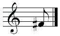

You must use the Google Chrome browser. You will not be able to do this task in other browsers.
Summary
In this task, we will have you try out a "virtual piano tutor", which teaches you the basics of playing music using your computer. You do NOT need any experience with music to do this task.
Requirements
Your computer must be able to play sound. to test; you should hear a note.
Instructions
In this task, we will turn your keyboard into a musical instrument, by assigning notes to each of the keys.
You will be shown a list of notes to play, and you will play each note by pressing the corresponding key on your keyboard (which will be highlighted). For example, to play the note "e1", you would press the "g" key.
This is what the task looks like:
Your objective will be to play back notes as fast as you can, without making mistakes. If you make a mistake, you will need to repeat the line. Once you are able to play the line of notes without any mistakes, it will advance to the next line.
Once you are done playing all the lines of notes we give you, you will be given a code that you can enter below, answer a brief survey, and submit the HIT.
Code you got from completing the task: Correct! Answer survey below and submit.Incorrect code
Survey
1) Can you read music? If yes, what is the note shown below?
Note name (leave blank if you cannot read music):

2) List any instruments you can play (list instruments you have the most experience with first):
Instrument 1:
Instrument 2:
Instrument 3:
Instrument 4:
Instrument 5:
3) How much experience do you have with playing music (on any instrument)?
4) When was the most recent time you have practiced playing music (on any instrument)?
5) How much experience do you have with playing the piano?
6) When was the most recent time you have practiced playing the piano?
7) Have you previously heard/played the pieces you played in this task? Do you know their names?
Name of Piece 1 (leave blank if you don't know it):
Have you ever heard this piece?
Have you ever played this piece?
Name of Piece 2 (leave blank if you don't know it):
Have you ever heard this piece?
Have you ever played this piece?